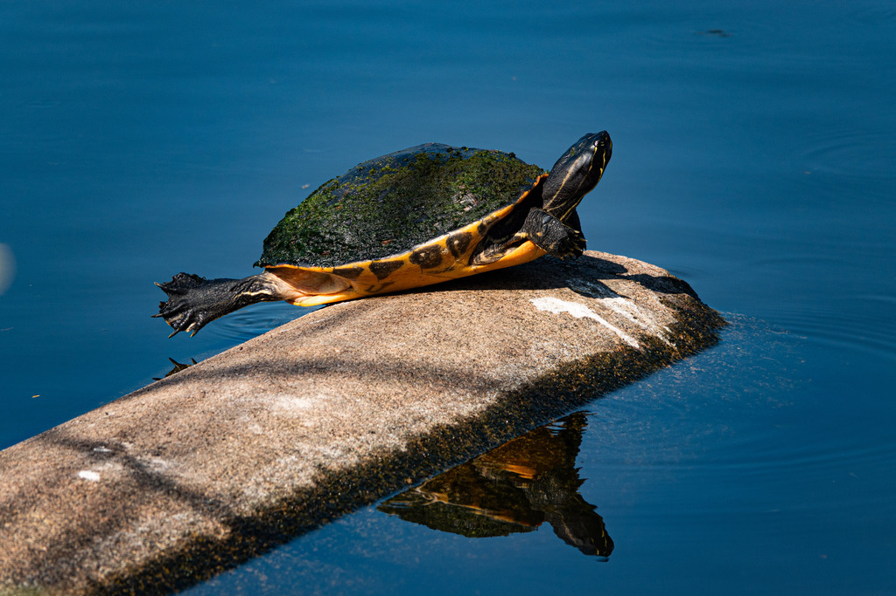

- The peninsular cooter is a large, dark freshwater turtle you will most often spot basking on a log or bank, soaking up the sun — often several piled together.
- Look for the bright yellow pinstripes running along its dark neck and shell; they are the easiest way to recognize it.
- Adults are almost entirely vegetarian, grazing on underwater plants, which is unusual among Florida's pond turtles.
- All that basking has a purpose: warming in the sun helps the cold-blooded turtle digest its fibrous, plant-based meals. Approach too quickly and you will hear a series of quiet plops as the whole row slips back into the water.
Domed and dark olive to brown, often with faint yellowish markings, growing dull and worn with age.
Dark with thin yellow stripes on the head, neck, and legs.
Large — clearly bigger than a slider when full grown; females larger than males.
Essentially silent.
A big, dark turtle basking on a log or bank, or just its head poking above the water as it swims. The combination of large size, domed dark shell, and yellow head stripes points to a cooter rather than the smaller, more boldly marked pond slider.
Adults are mostly herbivorous, grazing on submerged aquatic plants and algae. Young turtles also eat insects, snails, and other small aquatic animals.
Basking on logs, banks, and debris at the ponds on sunny days, or as a dark head moving across the water's surface.
Year-round resident. Most visible while basking on warm, sunny days.
Watch from a distance and do not handle or feed it. Basking turtles need their sun time; approaching just sends them diving off their logs.


- © Rob Carr (CC-BY-NC), via iNaturalist
- © flowerchild1969 (CC-BY-NC), via iNaturalist
- © David McSwain (CC-BY-NC), via iNaturalist